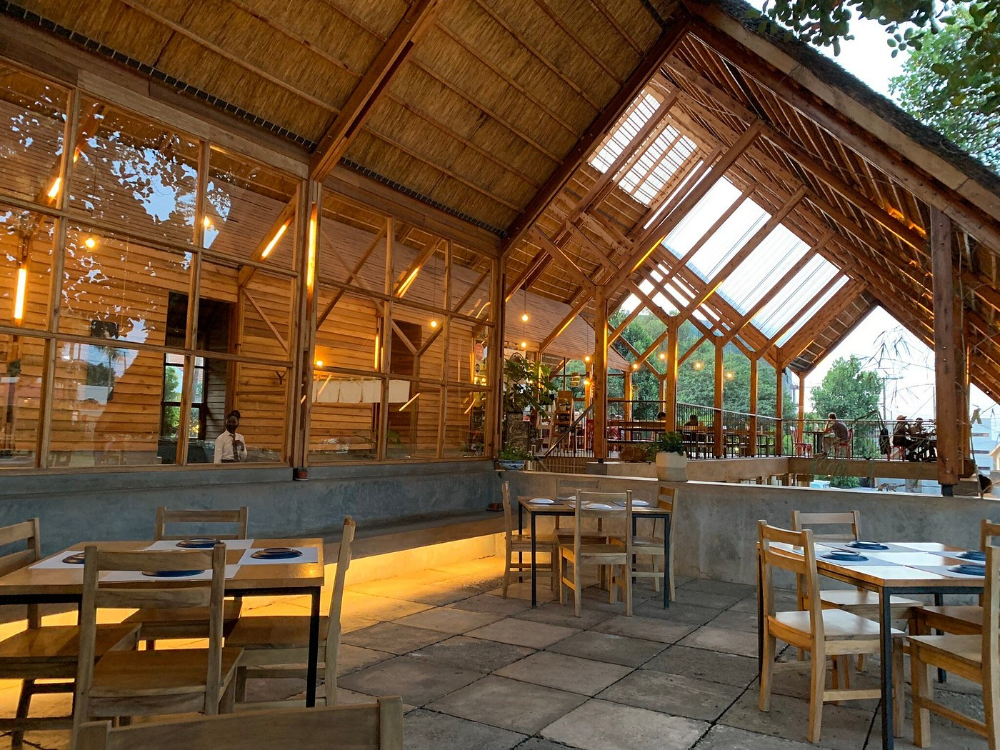

Yamasen began with a simple belief: that food cooked with intention tastes better.
The Origin
Nestled in Tank Hill Park with views over Kampala, Yamasen brings authentic Japanese cuisine to Uganda — not as a novelty, but as a living practice.
Every dish is grounded in seasonal thinking, sourced locally where possible, and prepared with the care and discipline of traditional Japanese cooking.
Founded with a vision to bridge cultures through the universal language of high-quality, honest food.
The Architecture
Our restaurant is designed to reflect the same balance we seek in our food: strength, simplicity, and a connection to the environment. The high vaulted wooden ceilings and open-air design allow the spirit of Kampala to flow through every meal.

Designed with local materials and traditional techniques, our space is as much a part of the experience as the menu itself.
The Architecture
Our restaurant is designed to reflect the same balance we seek in our food: strength, simplicity, and a connection to the environment. The high vaulted wooden ceilings and open-air design allow the spirit of Kampala to flow through every meal.

Designed with local materials and traditional techniques, our space is as much a part of the experience as the menu itself.
The Name
Our name, 山仙 (Yamasen), means "mountain sage" — a person of wisdom and simplicity who lives in harmony with nature.
It is both an aspiration and a direction: to cook thoughtfully, to waste nothing, and to serve food that nourishes both the body and the spirit.
The kanji 山 (yama) represents the mountains of Muyenga, while 仙 (sen) embodies our pursuit of culinary mastery.
Our Values
Seasonal & Local
We cook with what the season offers. Our menu changes with the harvest, not the other way around.
By sourcing from local Ugandan farmers, we reduce our carbon footprint and ensure that every ingredient on your plate is at its peak flavor and nutritional value.
Zero Waste
Kitchen waste becomes feed and fertiliser through our GAPPON Technology partnership. Nothing leaves without purpose.
Our circular food system transforms organic scraps into resources, closing the loop and contributing to a more sustainable future for Kampala's food ecosystem.
Honest Cooking
No shortcuts. We follow traditional Japanese techniques — because they work, and because they show respect for the ingredient.
From the precise cut of our sashimi to the slow-simmered depth of our dashi, we honor the time-tested methods that define authentic Japanese cuisine.
From Kitchen to Farm and Back Again
A circular food system where black soldier flies transform kitchen waste into feed, fertiliser, and ingredients that return to our table. We call it the Yamasen Loop — a closed cycle where every meal we serve feeds the system that feeds us back.
GAPPON Technology is our technology partner in this initiative, helping us measure, track, and optimise the loop from plate to farm and back.